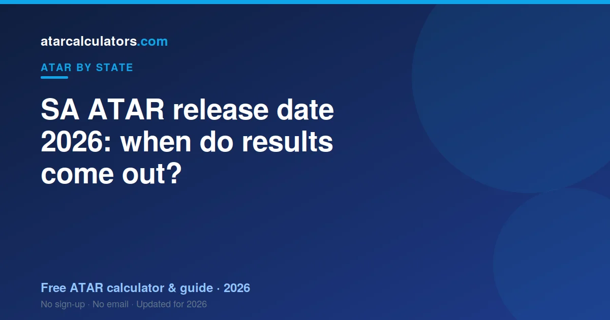

SA ATAR results for 2026 are expected in mid-to-late December 2026, in line with previous years. The SACE Board releases your Stage 2 subject results, and SATAC releases your ATAR around the same time. University offers usually follow in rounds from December into January. Confirm the exact 2026 date on the SATAC and SACE Board websites closer to the time.
Key takeaways
- Expect SA ATARs in mid-to-late December 2026, matching recent years.
- The SACE Board releases subject results. SATAC releases your ATAR.
- You access your ATAR through SATAC, using your application account.
- University offers usually follow in rounds from December into January.
- Always confirm the exact date on the SATAC and SACE Board sites.

When are 2026 SA ATAR results released?
SA ATAR results come out each year in mid-to-late December. Based on recent years, expect them in the second half of December 2026.
The SACE Board and SATAC set and announce the exact date closer to the time. So treat late December as a guide, not a fixed promise. A day or two of movement year to year is normal.
The safest move is to check the official SATAC and SACE Board pages in November or December 2026 for the confirmed date and time.
What time of day are SA results out?
Results are usually available from the morning on release day. SATAC and the SACE Board publish the exact time alongside the date, so check their pages for the confirmed release time.
It is normal for the portals to be busy right when results go live. If a site is slow, wait a short while and try again, rather than refreshing over and over.
How will I receive my SA ATAR?
Your ATAR is released by SATAC through your application account. You log in with the details you used to apply.
Your SACE subject results come from the SACE Board around the same time, through its students portal. Keep both logins handy before results day, so you are not hunting for them on the morning.
SACE results and ATAR are separate
It helps to know these are two different things. Your SACE subject results show how you did in each subject. Your ATAR is the rank SATAC works out from your aggregate.
You get your SACE results from the SACE Board and your ATAR from SATAC. They arrive around the same time, but from different places. See our SA ATAR guide for how the two connect.
When do university offers follow?
After ATARs are released, universities make offers in rounds. In SA, the main offer rounds usually run from December into January, with later rounds for courses that still have places.
If you do not get your first choice in an early round, keep watching. Later rounds and pathway options are still worth considering. Use the time to review your preferences.
What to do while you wait
The wait is stressful, so plan for it. Have a backup course in mind, in case your first choice needs a higher ATAR than you get.
It also helps to know your options early. Read our SA cutoffs guide so you know which courses suit a range of results. That way, whatever your ATAR, you have a plan ready.
What happens after your ATAR
Your ATAR is not the end of the process. After results, you finalise or adjust your course preferences through SATAC, and university offers follow in rounds, with the main round in January. So there is a gap between getting your ATAR and receiving an offer.
Use that gap wisely. Once you know your ATAR, review your preference list and make sure your genuine first choice sits at the top, with realistic options below it. You can usually adjust preferences before the offer round, which is worth doing if your ATAR differs from what you expected.
Preparing for results day
Results day can be stressful, so plan for it. Know in advance how and when you will access your results, and make sure your login details are ready. Decide who you want around you when you check, whether that is family or on your own.
It also helps to know your options ahead of time. Look up the cutoffs for the courses you want and a few alternatives, so that whatever your ATAR, you already understand your next step. Going in prepared takes some of the pressure out of the moment.
If your results are not what you hoped
If your ATAR is lower than you hoped, remember it is one pathway among many. SA institutions offer alternative entry options, bridging and enabling courses, and pathways through TAFE that can lead to a degree. An unexpected result is a setback, not a dead end.
Take a little time, then look at your options calmly. Many students reach the course they want through a second pathway, and institutions have staff who can talk you through the alternatives. There is almost always a route forward.
Common questions
When are 2026 SA ATAR results released?
SA ATAR results for 2026 are expected in mid-to-late December 2026, in line with recent years. SATAC and the SACE Board announce the exact date closer to the time, so confirm it on their official websites.
What time of day are SA results out?
Results are usually available from the morning on release day. SATAC and the SACE Board publish the exact time with the date, so check their pages for the confirmed release time.
How will I receive my SA ATAR?
SATAC releases your ATAR through your application account. Your SACE subject results come from the SACE Board around the same time, through its students portal.
Are SACE results and ATAR the same?
No. Your SACE results show how you did in each subject, released by the SACE Board. Your ATAR is the rank SATAC works out from your aggregate. They arrive around the same time from different places.
When do SA university offers come out?
Offer rounds usually run from December into January, after ATARs are released, with later rounds for courses that still have places.
What if my ATAR is lower than I hoped?
You still have options. Bonus points, later offer rounds, and foundation or transfer pathways can all help. Our SA cutoffs guide shows courses that suit a range of results.